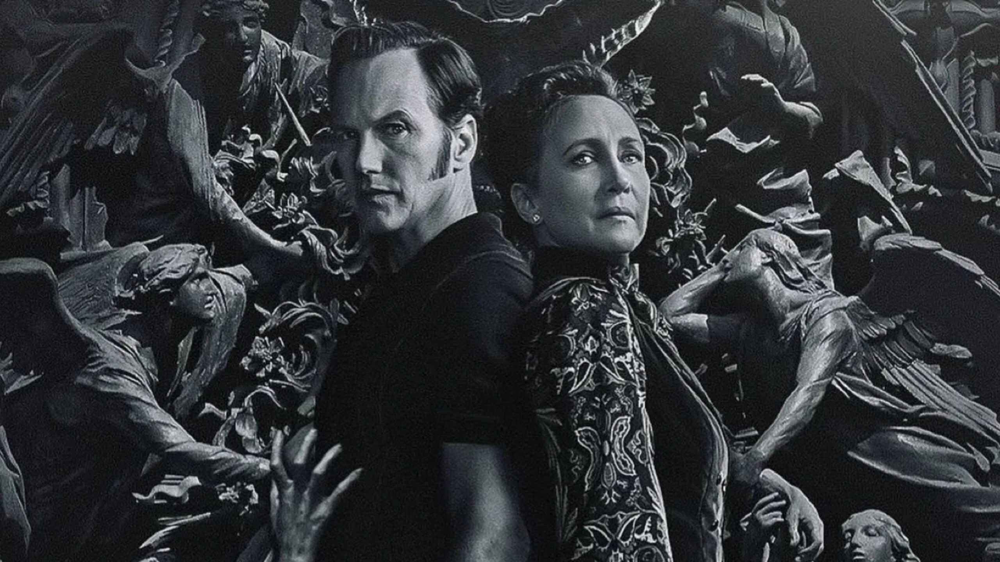

 Filme 2025
Filme 2025
Invocação do Mal 4: O Último Ritual marca o desfecho da franquia de terror iniciada em 2013 por James Wan.
Os filmes são inspirados nas investigações sobrenaturais do famoso casal de paranormais norte-americanos Ed e Lorraine Warren,
interpretados por Vera Farmiga e Patrick Wilson. Neste último capítulo, os Warren enfrentam mais um caso aterrorizante, desta
vez envolvendo entidades misteriosas que desafiam sua experiência. Ed e Lorraine se veem obrigados a encarar seus maiores medos,
colocando suas vidas em risco em uma batalha final contra forças malignas. O filme promete encerrar a história dos investigadores
com suspense e momentos de tensão, consolidando a franquia como uma das mais populares do gênero. Além dos sustos, o longa
também explora o relacionamento do casal, mostrando sua força emocional diante das adversidades.